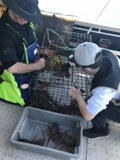

第一天
基督城
导游接机，并送返酒店入住休息

Golden Holiday Product
基督城、凯库拉、奥马鲁、但尼丁、皇后镇、库克山、蒂卡坡深度路线
行程路线

详细行程
导游接机，并送返酒店入住休息
●【梦娜维尔花园】（Mona Vale Garden），也有译为莫纳谷花园，被公认为基督城花园的经典代表，花园面积约5.5公顷，属典型的传统维多利亚式庄园，美丽的雅芳河（Avon river），也有译为艾芬河，纵贯其间，小溪、别墅、草坪、花园和树林，清雅秀丽，小桥流水，芳草如茵，绿柳垂荫，宛若置身英国剑桥的浪漫气氛，俨然理想的童话世界。
●【河畔市场】（Riverside Market ）是基督城新晋打卡地，这个位于雅芳河畔的市集，有各种美味小吃，一周七天都营业，是本地人和游客的热门聚集地。雅芳河畔风景优美，迭现英仑风貌。河畔市集旨在恢复基督城市中心的活力，为市民和游客提供一个购物，用餐，休闲的好去处。经历了一百多个概念设计，力求将欧洲传统市场和现代工业融合。
●【凯库拉】Kaikoura：风景如画的海滨小镇凯库拉是邂逅海洋生物、海边漫步，开怀大吃龙虾Crayfish 的理想之地。凯库拉是观赏各类野生动物的大本营，也是享用龙虾的天堂。凯库拉拥有壮丽的自然环境，村庄就坐落在凯库拉山脉与太平洋之间。在冬季，山上白雪覆盖，更增奇伟。
●参加【凯库拉海钓活动】Kaikoura Fishing，有机会收获龙虾和深海鱼，调皮活泼的野生朦胧海豚(Dusky Dolphin)会在你身边跳跃撒欢，仿佛一伸手就能摸到它们，这里没人会伤害它们，大海就是他们的游乐场。（游玩约2小时）
晚上带着满载而归的战利品返回基督城的中餐厅加工，大快朵颐，尽情享用海鲜大餐！
返回基督城。
早餐后乘车驱车前往奥玛鲁小镇，奥玛鲁是位于东海岸的第二大渔港， 白石小镇坐落在维多利亚老街区中心，充满维多利亚时代风情。
●游览【摩拉基大圆石】，那里的海滩上散 布着很多圆形巨石。也有一些大圆石分布在砂岩峭壁的周围，每块巨石都重达数吨，高达两米。 据毛利人传说，几百年前，独木舟阿雷德欧鲁(Araiteuru）在将要在新西兰靠岸时翻船，船上 的很多葫芦被冲上岸，就形成了今天我们看到的大圆石。 对此，科学家的解释是这些大圆石是方解石凝结物，形成于六千五百万年前。电离子周围的碳酸钙晶体逐渐形成大圆石，其过程 与珍珠的形成类似，但要经历四百万年之久。大圆石中的软泥岩在一千五百万年前出现在海底， 海浪和风雨又将它们逐渐挖掘了出来。 步行数分钟穿过再生本土森林，就来到了观景台，可 在此欣赏大圆石的壮观风景。
下午抵达【鸬鹚角】：Shag Point，位于新西兰南岛的奥塔哥地区，距离著名的摩拉基巨石不远。这个地方有着厚重的历史，可以追溯到12世纪，最初是毛利猎人的天堂。在Shag Point，恐鸟的化石和原始工具被发现，现在被展出在奥塔哥博物馆。此外，这里还有球形的巨石，虽然没有摩拉基集中，但也是一处独特的自然景观。
夜宿但尼丁。
●游览但尼丁参观新西兰最古老的【但尼丁火车站】，【奥塔哥大学】，【第一教堂】，市区自由游览观光， 感受小镇的休闲慢节奏和美丽风景，可以饮杯咖啡， 消除长途车后的疲劳。
●【鲍德温街】，体验吉尼斯世界记录世界上最陡街道的独特趣味。
傍晚抵达被誉为世界级蜜月小镇皇后镇，夜宿皇后镇。
早：√ 午：× 晚：×
●游览【箭镇】Arrow Town：英式建筑十分精致，漫步在箭河边,追忆当年数千名中国矿工的艰辛生活――他们居住的简陋小村庄依旧在河边。 白金汉街是这里的主要大街，它反映出了当地人在保存当年繁荣景象方面所作的努力。古老的建筑立于街道两旁, 汇集着各色商店和餐馆。
●游览世界上第一个商业蹦极发源地【卡瓦劳大桥 Kawarau Bridge Bungy】。作为蹦极圣地，每年都会有许多游客慕名来到卡瓦劳大桥体验极限运动的刺激。蹦极、滑翔伞、高空秋千应有尽有。不参加极限运动的您也可以免费围观看真正的勇者蹦极，还可以在桥上观赏美景，群山碧水，非常赞！
●下午游览皇后镇市区，看流浪艺人弹吉他和钢琴，参观姚晨结婚的教堂，逛逛市区的公园。
●【天际缆车Skyline&自助晚餐】Sky line坐落在皇后镇鲍勃峰山上，是南半球最陡的缆车轨道，倾斜度为37.1度，乘坐观光缆车上升至皇后镇最高的观光点（海拔800米）。这里是俯瞰皇后镇市区，瓦卡蒂普湖和远处高山的最佳地点。二楼的观光走廊可以270度俯瞰小镇全景。当晚在天空餐厅享用自助晚餐，可以同时观赏皇后镇的美丽夜景湖景和星空。
今天全天安排在皇后镇自由活动。这里是一个既能放松身心，又能挑战极限的绝佳目的地。您可以根据兴趣选择多种体验：前往格林诺奇魔戒小镇，探访《指环王》的拍摄地；或者挑战极限，尝试蹦极、跳伞等让肾上腺素飙升的冒险项目。喜欢悠闲的旅程，您还可以品酒、徒步、乘坐直升机俯瞰美景，甚至只是在街道上随意漫步，感受小镇风情。不妨品尝一下这里闻名的特色大汉堡，为行程增添一份独特的味蕾记忆。
早餐后前往库克山国家公园。
●开车全程沿着牛奶湖 【普卡基湖】Lake Pukaki 一路奔向南半球最高峰库克山 （Aoraki)。普卡基湖是呈长条状，是冰川堰塞湖，由于湖中含有大量的超细矿物颗粒，它们悬浮在湖水中反射出奶蓝色的光芒。湖水湛蓝，仿佛牛奶倾泻入蓝色的湖中般。彼得·杰克逊在《霍比特人：史矛革之战》中仿照普卡基湖的景色设计了“长湖镇”，而在完结篇《霍比特人：五军之战》中则使用了真实的普卡基湖作为场景。
●【三文鱼养殖场】在新西兰的南阿尔卑斯山(Southern Alps)深处坐落着欧拉奇/库克山(Aoraki/Mount Cook)国家公园。地球上最纯净的淡水，从这片崎岖的高山山脊上顺流而下。冰冷彻骨，川流不息。低温贮存完美锁住新西兰南岛珍馐原汁原味。可于此处享用新鲜三文鱼或三文鱼造的其他食物。
●【库克山国家公园.塔斯曼冰湖步道】Mount Cook/Aoraki: 库克山是南半球最高峰，海拔 3754 米。是毛利人心中的神山，有不可侵犯的地位。南起阿瑟隘口，西接迈因岭，正处于南阿尔卑斯山景色最壮观秀丽的中段。我们可以在国家公园内探寻其中的自然奥秘。若天气许,您可自费搭乘直升机前往南太平洋最大的塔斯曼冰河，并停留於冰河上，放眼望去，更是一片银色世界，彷如人间仙境。
●【好牧羊人教堂】The Church of the Good Shepherd：观赏经典的基督十字架与背后的蓝湖和库克雪山山脉，看麦肯奇地区的牧羊犬雕像 Sheep dog Statue。11-12月份鲁冰花期，蒂卡普湖周围开满鲁冰花，非常适合拍照。
新西兰有 4300 平方公里的区域成立了赫赫有名的“国际黑暗天空保护区”，规模之大在全球名列第一，而他就位于新西兰南岛。蒂卡坡湖的暗天保护区曾被评为“地球上最佳观星场所之一”。
早：√午：× 晚：×
（请自行预订傍晚后起飞的航班）
●【纸板教堂】 在2011年基督城地震中，著名的基督城大教堂（Christchurch Cathedral Square）遭到了很大的损害，至今未完全修复，所以当地政府绝对在市区内重新修建一座临时性教堂。考虑到基督城位于地震易发地区，教堂使用轻质纸制板材作为主材，风格独特，环保安全，因此从一个临时性的过渡教堂，成为了一个世界闻名的建筑，也是当地居民用心打造的与上帝沟通的场所。。
●【海格力公园】Hagley Park。每到春秋两季，全城花卉颜色丰富多彩，春天落英缤纷，有樱花瓣飘在公园里，秋天叠翠流金，交相辉映。伴着缓缓穿园而过的雅芳河 Avon River ，景色宜人，气氛甚好。
●前往机场送机。
***注:公司保留对上述行程的最终解释权，请以出发前确认行程为准，本公司有权对上述行程次序、景点、航班及住宿地点作临时修改、变动或更换，不再做预先通知，敬请谅解！***
预定须知